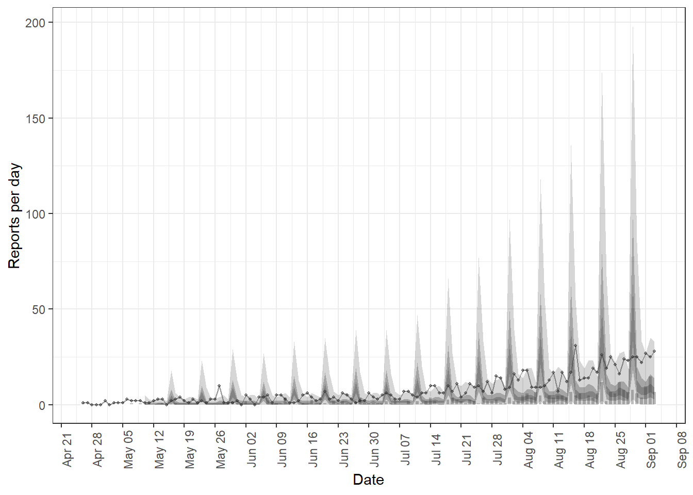

This task covers forecasting cases and deaths. You will learn how to build forecasting models and generate predictions of future disease incidence, by accounting for incomplete observations using Bayesian methods in {EpiNow2}. Covers short-term projections assuming a constant value for the reproduction number based on its latest estimate, handling incomplete observations, and forecasting secondary outcomes based on primary observations.
Note: Running EpiNow2 can be computationally expensive and may take several minutes to complete. If you want to skip this step, you can download the pre-computed estimates file and place it in your outputs/ folder:
Forecasting incidence with incomplete observations
We first used {EpiNow2} to forecast incidence of Ebola, accounting for under-reporting of outbreak cases. We estimate that only 40% of actual cases were reported during surveillance activities.
Code
# INSTALL AND LOAD PACKAGESpacman::p_load(tidyverse, EpiNow2, incidence2, reactable, rio)# LOAD DATA# Import linelist data and convert to incidenceebola_incidence <-readRDS("data/linelist.rds") |> incidence2::incidence(date_index ="date_onset",count_values_to ="confirm",date_names_to ="date",complete_dates =TRUE ) |> dplyr::select(-count_variable)# Defining generation time and Rt priors# Generation timegeneration_time_fixed <- EpiNow2::LogNormal(mean =4,sd =2,max =15)# define Rt prior distributionrt_prior <- EpiNow2::rt_opts(prior = EpiNow2::LogNormal(mean =2, sd =2))# Define observation model with 40% of cases being reportedobs_scale <- EpiNow2::Normal(mean =0.4, sd =0.01)# Check if the analysis has been run before and run EpiNow2 if notfile_name <-"outputs/forecast_estimates.rds"if (file.exists(file_name)) { forecast_estimates <-import(file_name)} else {# forecasting with epinow --------------------------------------------------- withr::local_options(base::list(mc.cores =4)) forecast_estimates <- EpiNow2::epinow(data = ebola_incidence,generation_time = EpiNow2::generation_time_opts(generation_time_fixed),rt = rt_prior,# Add observation modelobs = EpiNow2::obs_opts(scale = obs_scale),# Forecast windowforecast =forecast_opts(horizon =15),stan = EpiNow2::stan_opts(samples =500, chains =2) )export(forecast_estimates, file_name)}forecast_estimates$plots$infections
Forecasting secondary observations
Code
# Select early stages of the outbreak and convert data to EpiNow2 input, with# date, primary, and secondary columnsebola_cases_deaths <-readRDS("data/linelist.rds") |># Create date_death column: use date_outcome for entries where outcome == "Death"mutate(date_death =if_else(outcome =="Death", date_outcome, as.Date(NA))) |> incidence2::incidence(date_index =c("date_onset", "date_death"),date_names_to ="date",complete_dates =TRUE ) |>pivot_wider(names_from = count_variable, values_from = count) |>rename(primary = date_onset, secondary = date_death)# onset to death delay ---------------------------------------------------------onset_death_ebola <- epiparameter::epiparameter_db(disease ="ebola",epi_name ="onset to death",single_epiparameter =TRUE)onset_death_ebola_discrete <- epiparameter::discretise(onset_death_ebola)od_ebola_EN2 <- EpiNow2::Gamma(mean = onset_death_ebola$summary_stats$mean,sd = onset_death_ebola$summary_stats$sd,max =quantile(onset_death_ebola, p =0.99) )# Establish relationship between cases and deathsdata_od_estimation <- ebola_cases_deaths |>slice(20:150)estimate_cases_to_deaths <- EpiNow2::estimate_secondary(data = data_od_estimation,secondary = EpiNow2::secondary_opts(type ="incidence"),delays = EpiNow2::delay_opts(od_ebola_EN2))
We then forecasted the number of deaths that would arise from reported Ebola cases in the early stages of the outbreak that started in 2014.
Code
plot(estimate_cases_to_deaths, primary =TRUE)

Code
# Forecast from day 151 to day 300 (not included in model fit)# Rename primary to value (required by forecast_secondary)cases_to_forecast <- ebola_cases_deaths |>slice(151:300) |>select(date, primary) |>rename(value = primary)# Forecast secondary casesdeaths_forecast <- EpiNow2::forecast_secondary(estimate = estimate_cases_to_deaths,primary = cases_to_forecast)plot(deaths_forecast)